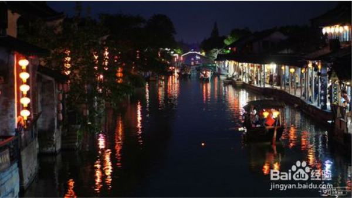

西塘位于浙江省嘉兴市嘉善县北部，距县城11千米。以“桥多、弄多、廊棚多”而文明于世，西塘古镇较其他水乡古镇历史更为悠久，最为著名的风景线就是造型古朴的廊棚。这里的廊棚沿河而建，总共有数百米长，全部为木结构的柱子，一色的鱼鳞黑瓦盖顶。廊棚对面是一长排历经沧桑的古民居，这些古民居的规格比皖南民居要低一些，并无富豪之气，更多的是生活化格局。有着千年历史的西塘，是江南最大的古镇，自古就有“吴根越角”的说法。
西塘地势平坦,河流密布,自然环境十分幽静。有9条河道在镇区交汇,把镇区分划成8个板块,而众多的桥梁又把水乡连成一体。古称“九龙捧珠”、“八面来风”。古镇区内有保存完好的明清建筑群多处，具有较高的艺术性和研究价值，为国内外研究古建筑的专家学者所瞩目。鸟瞰全镇，薄雾似纱，两岸粉墙高耸，瓦屋倒影。傍晚，夕阳斜照，渔舟唱晚，灯火闪耀，酒香飘溢，整座水乡古镇似诗如画，人处其间，恍然桃源琼瑶，不知是人在画中游，还是画在心中移。
